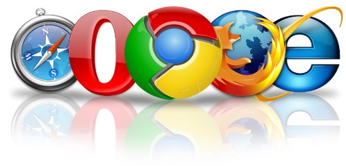

Нам з вами важко уявити своє життя без Інтернету. Зараз робота з інформацією та використання інструментів на базі веб та Інтернет – невід'ємна частина мого життя. Майже як електрика та громадський транспорт.
Важливо відчути різницю між Інтернетом та веб. Інтернет – це мережа, яка об’єднує велику кількість комп’ютерів і надає можливості для передачі інформації між ними. Спочатку цю мережу створили для обміну інформацією у військових цілях. І було це в часи, коли комп’ютери мали вигляд великих кімнат з купою пристроїв.
І лише через багато років вона перетворилася в мережу, яка об’єднує величезну кількість комп’ютерів та менших мереж – тобто Інтернет у сучасному вигляді. Це цікава історія і детальніше її можна прочитати за посиланням.
Інтернет можна використовувати для будь-яких задач. І веб – лише один зі сценаріїв його використання, хоча і найвідоміший. Інший знайомий нам приклад використання Інтернет – обмін електроними листами – e-mail.
Що ж таке саме веб? Більш формально – це множина всіх доступних в Інтернеті документів (їх ще називають “ресурсами”), які мають адреси у вигляді універсальних локаторів ресурсів (URL) та пов’язані між собою за допомогою гіперпосилань. А простіше, веб – це всі сторінки та сайти в Інтернеті. А також ті технології, які дозволяють нам зручно з ними працювати. Тобто веб не вичерпує собою весь Інтернет.
Наприклад, окрім веб-серверів Інтернет також включає файлові сервери, поштові сервери, сервери месенджерів типу Telegram і Skype, та багато інших, менш публічних підсистем, які також обмінюються інформацією через мережу.
Вважають, що веб народився в 1989 році. Британський вчений сер Тім Бернерз Лі, який на той час працював в CERN, запропонував принципи системи, покликаної спростити доступ до інформації вченим з різних установ. Він описав, який вигляд може мати документ, яким чином задавати його адресу в мережі, який вигляд матимуть посилання між документами. Певне, звідси і виток терміну “веб-сторінка” – адже спочатку в вебі були доступні саме документи, які дійсно були поділеніі на сторінки!
Більшість із технологій Тім не створював з нуля – вони вже існували, але їх використовували для інших потреб. З часом він з робочою групою реалізував перші версії потрібних для роботи програм. Зокрема створив перший браузер.
З сучасними браузерами ми всі добре знайомі. Серед найпопулярніших: Google Chrome, Mozilla Firefox, Microsoft Edge, Apple Safari, Opera. Браузери – дуже важлива частина екосистеми веб. Вони інтерпретують код сторінки та відображають її у вигляді, який ми можемо побачити, прочитати та зрозуміти. І чим більше можливостей ми намагаємось надати веб-сторінкам, тим складнішими та досконалішими доводиться створювати браузери, щоб ці можливості реалізовувати. Наприклад, перші браузери не вміли відображати анімації та не дозволяли користувачу активно взаємодіяти зі сторінкою.

Через деякий час стало зрозуміло, що веб швидко набуває популярності, а сфера його використання неймовірно розширюється. Щоб доступ до нього був необмежений та вільний для всіх, усі технології зробили відкритими.
Аби кординувати розвиток веб, за ініціативою Тіма було створено організацію W3C. В рамках цієї організації виробляють та описують стандарти та рекомендації, яким мають відповідати сайти та браузери. Насправді, від цих рекомендацій є багато відхилень, але все ж вони набагато спрощують життя нам, веб-розробникам, та певною мірою забезпечують стабільність розвитку веб. А це – непросте завдання для системи, що так бурхливо розвивається. За даними, на момент написання цього тексту маємо більше чотирьох мільярдів користувачів веб та близько двох мільярдів веб-сайтів!